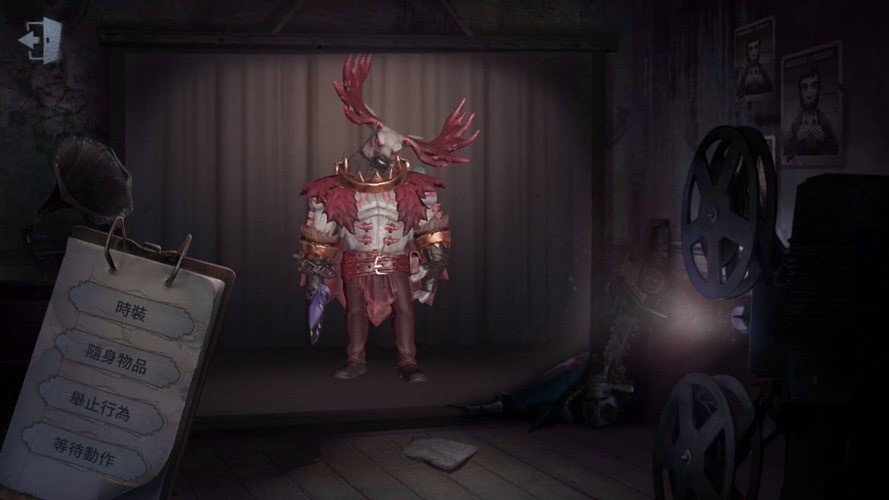

鹿頭

【人物介紹】
名字：班恩
班恩是個熱心腸的獵場看守，總是心軟地放那些偷獵者離開。但他的寬容沒有得到回報，偷獵者們去而複返，襲擊了他，可憐的班恩被摁在捕獸夾上，耳邊不斷迴響著鹿群的哀鳴。偷獵者帶著戰利品離開後，獵犬把班恩拖回了莊園，從此班恩對任何進入自己“領地”的人都不再留情。
【能力介紹】
鏈爪（二階段解鎖）：獵場巡守甩動鏈爪，將鉤中的求生者扯向自己；鎖鏈擊中牆壁時則將自己拉向牆壁；蓄力使用更易於瞄準——“你不能這樣離開！”
憤怒鏈爪（三階段解鎖）：憤怒讓獵場巡守更有力量，現在他的鎖鏈擊中求生者將造成傷害——“你不能這樣離開！”